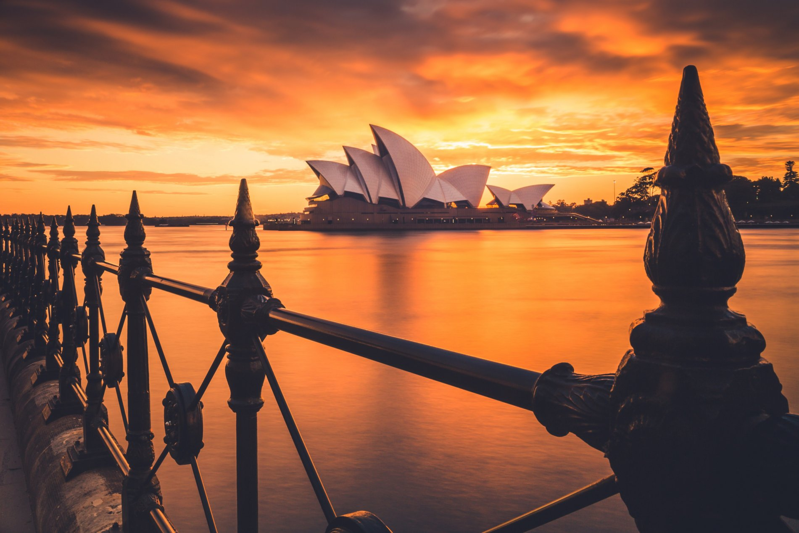
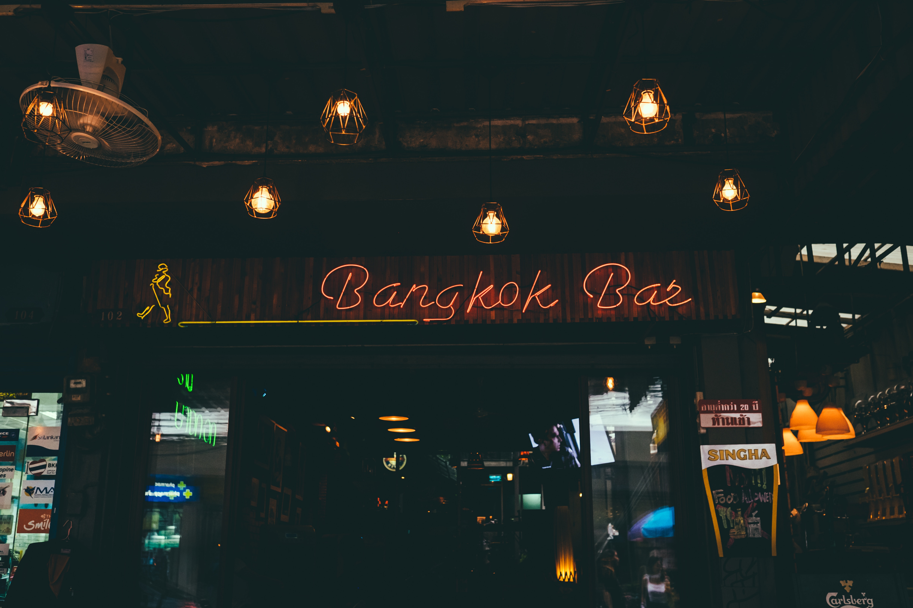
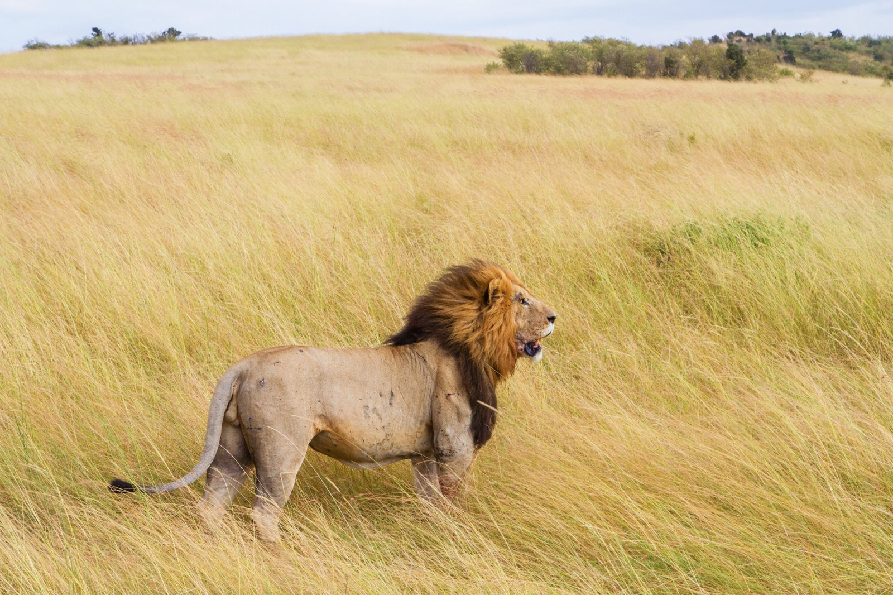

A la découverte de San Francisco

San Francisco, en Californie du Nord, est une ville vallonnée à la pointe d'une péninsule entourée par l'océan Pacifique et la baie de San Francisco. Elle est célèbre pour son brouillard permanent, l'emblématique pont du Golden Gate, ses Cable Cars et ses maisons victoriennes colorées. La Transamerica Pyramid, située dans le quartier financier, est le gratte-ciel le plus distinctif de la ville. Dans la baie se trouve l'île d'Alcatraz, qui abrite l'ancienne prison.
suite article
Sydney la belle

Sydney, capitale de la Nouvelle-Galles du Sud et l'une des plus grandes villes d'Australie, est renommée pour son opéra situé dans le port, avec son design distinctif en forme de voiles. Le vaste Darling Harbour et le plus petit port de Circular Quay sont des pôles majeurs de la vie au bord de l'eau, à proximité du Harbour Bridge et des jardins botaniques royaux. La plate-forme extérieure de Sydney Tower, le Skywalk, offre une vue à 360 degrés sur la ville et ses banlieues.
suite article
Ce qui se passe à Bangkok...

Bangkok, la capitale de la Thaïlande, est une grande ville connue pour ses sanctuaires richement décorés et ses rues animées. Rempli de bateaux, le fleuve Chao Praya alimente son réseau de canaux et passe par le district royal de Rattanakosin, où se trouvent l'opulent Grand Palais et son temple sacré Wat Phra Kaeo.
suite article
Wild Nairobi

Nairobi est la capitale du Kenya. Outre son centre urbain, la ville comporte aussi le parc national de Nairobi, une grande réserve où vivent des rhinocéros noirs, une espèce menacée, ainsi que des girafes, des zèbres et des lions. Juste à côté se trouve un orphelinat pour éléphants réputé, géré par la David Sheldrick Wildlife Trust. Nairobi est également souvent le point de départ des safaris au Kenya.
suite article